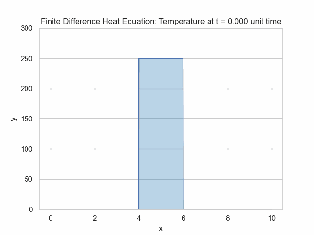

import numpy as np
import matplotlib.pyplot as plt
def f(x):
return np.exp(x)
def slope_of_secant(x1, x2):
return (f(x2) - f(x1)) / (x2 - x1)
def extended_secant_line(x1, x2, X):
slope = slope_of_secant(x1, x2)
print(slope)
y_intercept = f(x1) - slope * x1
return slope * X + y_intercept
x = 1
h_values = [2,1, 0.5]
X = np.linspace(-3, 4, 400)
Y = f(X)
plt.figure(figsize=(8,6))
plt.plot(X, Y, label="y = $e^x$", color="black", linewidth=2)
colors = plt.colormaps['tab10'].colors
for i,h in enumerate(h_values):
x2 = x + h
x1 = x - h
plt.plot(X, extended_secant_line(x1, x2, X), label=f"h = {h}; secant slope={slope_of_secant(x1, x2):.3f}", linestyle="--",color=colors[i])
plt.scatter([x1, x2], [f(x1), f(x2)], color=colors[i])
plt.plot(X, np.exp(1)*X+f(1) - np.exp(1) * 1, label=f"Derivative; slope={np.exp(1):.3f}", linestyle="--",color=colors[3])
plt.scatter([1], [f(1)], color=colors[3])
plt.title("Secant Line Estimations of the Derivative at x=1")
plt.xlabel('x')
plt.ylabel('y')
plt.legend()
plt.grid(True)
plt.xlim(-2, 4)
plt.ylim(-1, 25)
plt.show()
Finite Difference Method
Introduction
In practice, many PDEs do not have closed-form solutions. Finite difference methods (FDM) are numerical techniques used to approximate the solutions of partial differential equations (PDEs). By discretizing the domain into a finite number of grid points, FDM translates continuous PDEs into a system of algebraic equations.Basics of Finite Difference
Outline
Difference Quotients
Forward Difference
$$\frac{f(x+h)-f(x)}{h}$$Backward Difference
$$\frac{f(x)-f(x-h)}{h}$$Central Difference
$$\frac{f(x+h)-f(x-h)}{2h}$$ Taking the deriative with respect to other variables works the same. When taking partial derivatives with respect to a variable, simply do not change the other variables like with normal partial differentiation.Taking A Secant Line Closer (Central Difference)
Smaller values of \(\Delta x\) make for better approximations, but stability conditions must be paid attention to.
Second Deriatives
In order to get a second deriative of a function, one takes the derivative of the derivative. The same logic applies for finite differences - take the finite difference of finite differences.Let us consider taking spacial derivative via forward differences for simplicity. $$f'(x)\approx \frac{f(x+\Delta x)-f(x)}{\Delta x}$$ $$f''(x)\approx\frac{f'(x+h)-f'(x)}{h}$$ Combining the two formulae, we get: $$f''(x)\approx\frac{\frac{f(x+2\Delta x)-f(x+\Delta x)}{\Delta x}-\frac{f(x+\Delta x)-f(x)}{\Delta x}}{\Delta x}$$ $$f''(x)\approx\frac{f(x+2\Delta x)-2f(x+\Delta x)+f(x)}{(\Delta x)^2}$$ One can also use the backward or central differences.
If one requires higher order derivatives, the same logic can be applied, iteratively taking finite differences.
It is also possible to use finite differences for mixed partials. The central difference formula for mixed partials is relatively simple: $$\frac{\partial^2 f}{\partial x\partial y}=\frac{f(x+\Delta x,y+\Delta y)-f(x+\Delta x, y-\Delta y)-f(x-\Delta x, y+\Delta y)+f(x-\Delta x, y -\Delta y)}{4(\Delta x)(\Delta y)}$$
Computational Considerations
Mathematically, the formulas aren't that difficult. The issue is that it can be computationally expensive to compute all these function values.Example - Heat Equation
The heat equation is the basic example in the world of Partial Differential Equations. It is simple and has an analytic solution. It has dynamics given by $$\frac{\partial u}{\partial t}=\alpha\frac{\partial^2 u}{\partial x^2}$$ 
# modified from https://levelup.gitconnected.com/solving-2d-heat-equation-numerically-using-python-3334004aa01a
bar_length = 10
max_iter_time = 10000
alpha = 5.0
n = 1000
delta_x = bar_length/n
# Calculated params
delta_t = (delta_x ** 2)/(4 * alpha)
gamma = (alpha * delta_t) / (delta_x ** 2)
# Initialize solution: the grid of u(k, i)
u = np.empty((max_iter_time, n))
# Boundary conditions (fixed temperature)
u_left = 0.0
u_right = 0.0
# Set the initial condition
u.fill(u_initial)
# initial heat pattern
initial_temp_peak = 250
u[:, n//2-100:n//2+100] = initial_temp_peak
def Explicit_Finite_Difference(u):
for k in range(0, max_iter_time-1, 1):
for i in range(1, n-1, 1):
u[k + 1, i] = gamma * (u[k][i+1] + u[k][i-1] - 2*u[k][i]) + u[k][i]
return u
def plotheatmap(u_k, k):
# Clear the current plot figure
plt.clf()
plt.title(f"Temperature at t = {k*delta_t:.3f} unit time")
plt.xlabel("x")
plt.ylabel("y")
plt.ylim([0,initial_temp_peak+50])
# This is to plot u_k (u at time-step k)
plt.plot([delta_x*i for i in range(n)],u_k)
return plt
u = Explicit_Finite_Difference(u)
def animate(k):
k *= 100
plotheatmap(u[k], k)
anim = animation.FuncAnimation(plt.figure(), animate, interval=1, frames=max_iter_time//100, repeat=False)
anim
anim.save("Heat-Equation-Finite-Difference.gif")